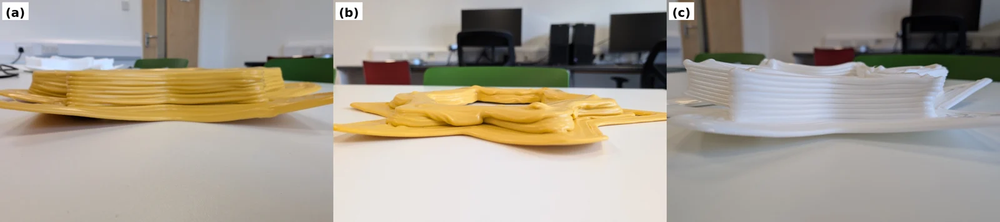

Featured Projects
Selected engineering projects spanning robotic additive manufacturing, generative design, material testing, 3D scanning, reverse engineering and rapid prototyping.

Recycled Polymer Feedstock for Large-Format Additive Manufacturing
Investigation of recycled polypropylene for robotic pellet-extrusion additive manufacturing, integrating feedstock preparation, process calibration, ABB robotic deposition and scan-to-CAD dimensional validation.
Read Research Case Study
Aerospace Seat Bracket Optimisation
Reduced component mass by 92.5% using Autodesk Fusion 360 generative design, FEA validation and additive manufacture in Markforged Onyx.
Read Case Study
Bespoke VR Headset Architecture
A human-centred design study using 3D scanning and scan-derived digital geometry to investigate improved VR headset accommodation for afro-textured hair.
Read Case StudyBike Curious: L3E Urban Mobility
Iterative CAD and rapid prototyping of an urban electric moped concept, combining sustainable material exploration with printability-led design refinement.
Read Case Study
Reverse Engineering: Aquarium Pump
End-to-end scan-to-CAD workflow using EinScan SP geometry to reconstruct, iterate and manufacture a functional replacement part with a snap-fit interface.
Read Case Study